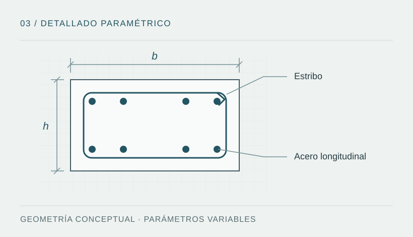

Problema técnico y objetivo
El dibujo de elementos de concreto armado repite operaciones de contorno, distribución de estribos, acero longitudinal, cotas e intersecciones. La consistencia entre capas, textos y geometría requiere criterios explícitos.
Objetivo: organizar esas operaciones mediante comandos parametrizados para apoyar la producción de detalles y facilitar su revisión. La automatización descrita se refiere al dibujo; no acredita el diseño estructural del elemento.

Familias descritas y metodología
- Vigas: configuración y dibujo de estribos por tramo o área seleccionada.
- Acero y cotas: rutinas para acero longitudinal y dimensionado con convenciones gráficas uniformes.
- Columnas y placas: secciones con geometría y disposición del armado parametrizadas.
- Escaleras e intersecciones: generación de geometrías, elementos de borde y encuentros.
- Organización gráfica: reglas de capas, colores, espaciados y textos para mantener consistencia documental.
La metodología descrita separa parámetros de entrada, construcción geométrica y presentación. Los archivos .lsp no están adjuntos, por lo que no se presenta esta descripción como una auditoría de los comandos implementados.
Procedimiento de uso descrito
- Preparar los parámetros: dimensiones, recubrimientos, diámetros, distribución y convenciones de dibujo según el detalle requerido.
- Elegir el elemento o tramo: identificar la geometría y la familia de comandos pertinente.
- Generar el dibujo: construir contornos, representación del acero, cotas y textos en sus capas.
- Revisar la salida: comprobar geometría, legibilidad, unidades e interferencias con el resto de los planos.
- Contrastar criterios técnicos: revisar confinamiento, longitudes de desarrollo, separaciones y compatibilidad con los planos estructurales aprobados.
Integrar programación y documentación técnica
El valor del flujo está en conservar la relación entre un criterio de diseño revisado, sus parámetros y el detalle que se comunica. Una integración futura puede utilizar Python para preparar y validar tablas y AutoLISP para construir la representación en AutoCAD.
- Registrar la entrada: identificador del elemento, unidades, geometría, recubrimiento, diámetros, distribución y revisión de origen.
- Validar los parámetros: detectar campos vacíos, unidades incompatibles y valores fuera del alcance antes de generar geometría. La coherencia de datos no acredita la suficiencia del armado.
- Producir y relacionar el detalle: asociar la salida con el elemento, la tabla de parámetros y la revisión de la rutina; conservar capas, cotas y convenciones gráficas.
- Revisar y emitir: contrastar el dibujo con la memoria y los planos coordinados, documentar cambios y mantener una revisión técnica antes de incorporarlo a un entregable.
Estado de esta integración: propuesta de organización del trabajo. No se presenta como una conexión Python–AutoCAD implementada ni como un proceso utilizado en los proyectos profesionales. Las rutinas históricas siguen pendientes de archivos .lsp y capturas auténticas.
Las referencias de concreto y detallado orientan la revisión según la base de diseño adoptada. El demostrador independiente de validación de datos, creado para este portafolio en octubre de 2026, permite explorar controles de CSV; no ejecuta AutoCAD ni estas rutinas.
Resultado descrito y evidencia pendiente
La documentación describe un flujo de dibujo más sistemático y configurable. No hay archivos fuente, capturas de ejecución ni mediciones adjuntas que permitan verificar su funcionamiento o cuantificar productividad. No se atribuyen porcentajes de ahorro de tiempo.
| Disponible | Pendiente de incorporar |
|---|---|
| Descripción de familias de rutinas y operaciones. | Ejemplos de código que puedan compartirse y documentación de comandos. |
| Esquema conceptual del detallado. | Capturas auténticas de AutoCAD, ejemplos de entrada y salida, y versión compatible. |
| Criterios de revisión del dibujo. | Casos ejecutados, registro de errores y mediciones comparables si se desea evaluar tiempos. |
Competencias abordadas
Descomposición de tareas repetitivas, parametrización geométrica, organización del dibujo técnico y documentación de procedimientos. AutoCAD y AutoLISP son las tecnologías descritas para estas familias; la evidencia ejecutable permanece pendiente de publicación.